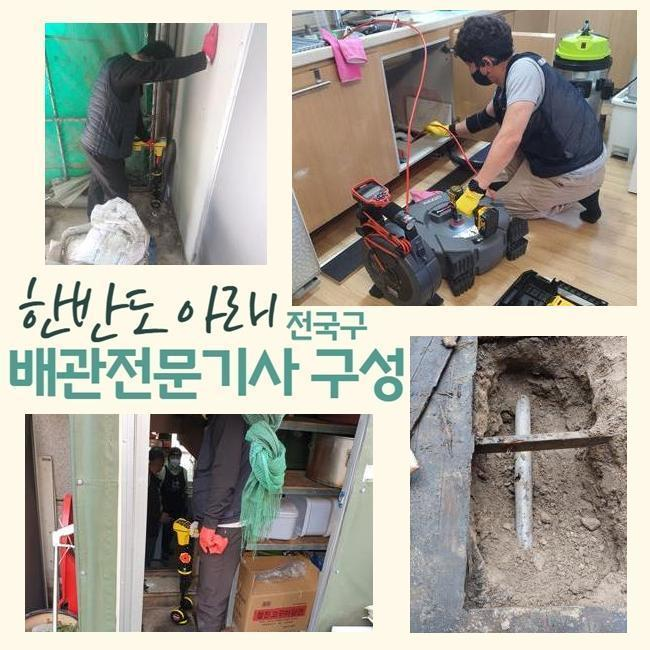
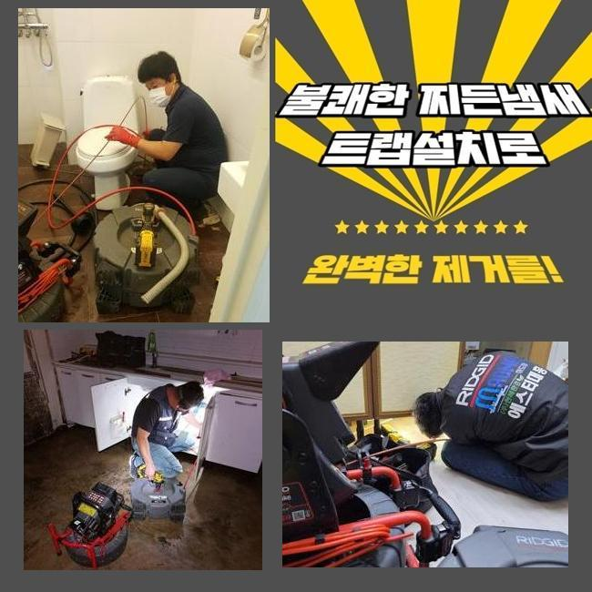
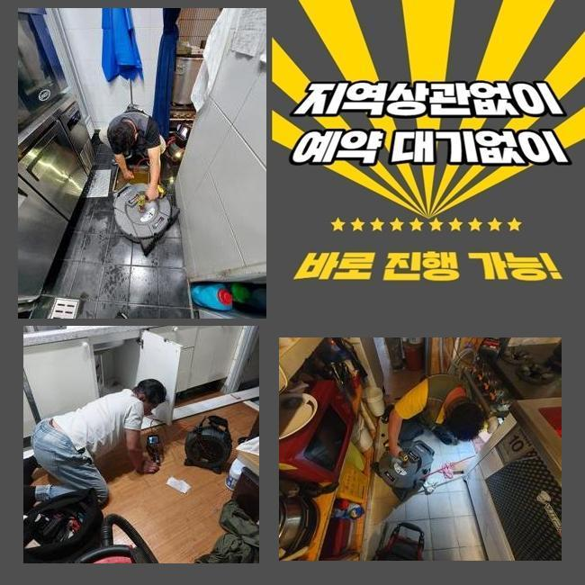
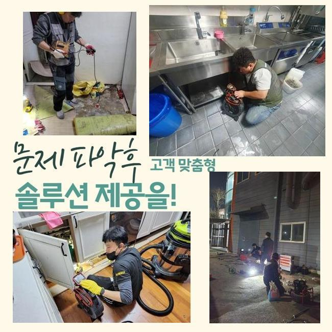
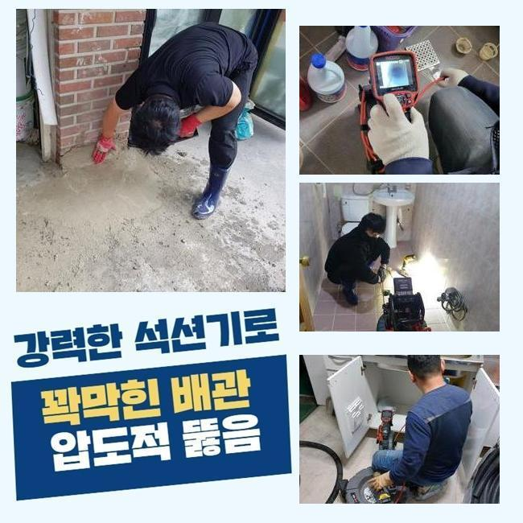
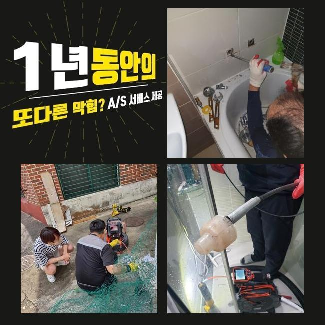

🏠 김포시 풍무동세탁실뚫음 고촌읍 하수구뚫는비용 출장설비
용인 하수구막힘 전문 시공 후기

📋 작업 개요
- 위치: 용인
- 서비스 유형: 하수구막힘, 배관막힘, 누수수리, 뚫는업체, 배관청소, 설비공사, 악취차단
- 작업 일시: 2024. 12. 8. 17:39
- 업체명: 하수구수사대 (010-5615-2118)
🔍 문제 상황
김포시 풍무동세탁실뚫음 고촌읍 하수구뚫는비용 출장설비
금일에는 하수관에 트러블이 발생해 굴착작업으로 해결하였던 곳을 소개해드릴까 합니다
보편적인 경우와달리 이런 일에는 여러가지 변인이 포함된다는걸 말씀드립니다
의뢰자께서는 건물주셨고 근래들어 상가내에 거하시는 입주자들로부터 배수문으로 물빠짐이 시원치않다는 지속적인 항의에 정신이 없으시다면서 빠른 해결을 요청하셨어요
공동하수관이 막혀버린다면 그것과 연계된 자리에선 배수흐름이 적절히 안 이루어집니다
1개 관로가 많은 집들에 불편함을 유발하는거죠
그걸 관리하시는 관리자는 그러한 사태들을 당면한다면 매우 난처하시겠죠
따라서 전문가를 불러서 빠르게 수리를 하시는게 좋은데요
시간이 많이 흐른다면 피해정도를 늘일수가 있어서죠
만약 이때 금전적 부담으로 수리를 미루신다면 예기치않은 문제들이 속출하기도 해요
조속히 트러블을 해결해 드리기위해 장비들을 챙긴후에 고객님이 계신곳으로 출동했습니다
고객님과 인사를드리고 본격적으로 작업준비를 합니다
저흰 시공전날 선제적으로 방문을 드렸고 검사를 하고나서 시공한 부위를 정해두었죠
그리고나서 고객님의 생각을 청취한뒤 사람이 비교적 적은 다음날의 오전중에 굴착하기로 이야기를 나누었던거죠

🔎 원인 분석
💡 전문가 진단: 정밀 진단 장비를 사용하여 슬러지의 고착 여부를 판명하고 타격/세척 작업을 실시했습니다.
저희쪽에선 이른새벽이나 밤11시 이후 시공하는게 거리낌없지만 손님분의 견해를 우선한다는걸 알려드려요
다수의 인원들이 상주하는경우 민원이 다수 발생해서 메인시공을 시행하지못하는 정황도 발발하기도 해요
그런것들도 저희측에서 선제적으로 파악한뒤 공사하고 있습니다
저희측이 표시했던 구역을 중심으로 굴토를 시행키로 하였죠
크로스체킹의 개념으로 막힘현상이 일어난 곳을 거듭 조사하고 공사에 돌입하였죠
굴착장비를 동원하여 꽤 오랜시간 굴착업무를 시행하였는데요
젖어있는 구간이 상당량 보였고 금이 가있는 하수관도 존재하고 있음을 알게되었죠
저희들은 이순간에 일이 커질것 같다는걸 직감할수 있었죠
관로막힘에 더하여서 누수증세까지 표출되었다면 손봐야하는 지점이 늘수밖에 없어요
의뢰자께 이부위의 관로가 부서진걸 인지하고 있으셨는지 물어봤는데요
그러자 사장님은 매일 설비쪽 보존관리에 노력하지만 아래에 매립된 관로까지는 생각하지 못하였다고 말씀말하셨죠
전문가가 아니라면 이상이 나타나는 상황이 아니라면 그것들을 자발적으로 알아내긴 어렵다 설명해 드렸답니다
외관에서 깨져버린게 목격되었기에 안쪽부분도 파괴가 됐을 확률이 높다고 예측했어요
본질적인 상황을 밝히기위해 내시경설비를 집어넣어서 검사해보기로 하였답니다

🔧 작업 과정
금번에 찾아간 장소는 내시경장비를 투입시켜 조사해보니 상당량의 기름침전물과 예측한바와 같이 깨진 배관의 편린들이 폐치된 모습이었죠
강력한 압력으로 배관이 이러한 형태로 변형된거라 예측할수 있었어요
주변에서 살펴보시던 의뢰인분께서는 며칠 전 건물내부 인테리어 중에 물건들을 나르다가 바닥타일을 손상시킨적이 있었는데 그때의 충격이 의심된다는 말씀을주셨죠
건물내측을 조사하니 일부가 침강되어서 이것으로 피해를 본 시설들이 많이 보였는데요
방문지의 배관 근처는 아니었으나 충격을 받은 관계로 뜯겨나간 돌가루들이 예상하지 못했던 곳까지 퍼졌고 부가적으로 하수관까지 진행돼 이때문에 배수관이 파괴된것이라 예견할수 있었죠
이런상황에서는 특출난 방법이란건 없죠
원인이되는 장소를 찾아내서 그부분을 소멸시키는게 유일무이하다고 볼수있어요
배관을 교체하기전 내측에 채워진 이물들을 꼼꼼하게 정리해야 업무가 용이해서 비워주기로 하였어요
보편적인 뚫음공사와 유사하게 내시경설비를 통해 촬영을 마치고 이에 마땅한 기계를 가동하여 내부를 청소한뒤 본작업에 돌입해야하죠
조사결과 들어내야할 파이프에는 여러종류의 이물질들이 대단히 많았답니다
해당 성분들이 길목을 차단하였으니 물사용이 적절히 될수 없던건 어쩌면 당연했어요
샤프트기계를 통해 고착화된 것들을 걷어낸뒤 석션기기를 통해 잔류하는 슬러지들을 신속하게 제거하였답니다
파손된 파이프를 제거한뒤 그쪽에 신형 관을 시설하는게 해결책이었기 때문에 이와 연계된 수리방안에 대하여 고객께 정확하게 설명하고나서 본시공에 들어갔답니다
인내심을 갖고 작업하였더니 비로소 매립되어 있었던 고장난 파이프를 외측으로 꺼냈답니다
그것을 빼낸 장소에 새로 가져온 PB배관을 가설하였죠
과정을 마무리하고 최종단계로 검사를 거치게 되는데요
견고하게 공사가 진행되어서 관로의 압력수치는 정상적으로 유지되고 있다는걸 확인하게 되었어요
그후 배관막힘으로 고생하셨던 고객님에게 내방하여 물빠짐이 잘 되고있는지 확인하기로 했습니다
정상적인 상황으로 복원됐다는걸 파악하였고 방수시멘트로 미장마감을 진행했어요
굴착영역이 컸고 처리해야할 슬러지들도 적지않아서 예측보다 시간소모가 많이됐지만 정결하게 정리하니 만족감이 가득해지더군요
배수관이 갑자기 막혀버린다면 생활의 큰 불편함을 초래합니다
음식점들은 물막힘이 생기면 주방을 사용하기가 곤란해지겠죠
따라서 배관전문가를 통하여서 수리를 맞기시는 편이 마땅하다고 볼수 있겠죠


✅ 작업 완료
만약 단순한 막힘증세만 처리한뒤 본질적인 부분은 잔존하는 상태로 돌아가버린다면 건물사장님께서는 또다시 수선을 받아보셔야 할텐데요
그리 된다면 수리비용을 포함하여 주거자들의 불편은 더더욱 커지겠죠
약소한 물막힘이 일어났다면 고객님께서 뚫어내실수도 있겠으나 그게 반복적이라면 손을 보시는게 좋을거에요
일반인들이 실시하는 기법으로는 겨우 물길만 생기게만들고 단단해진 잔재들의 처리는 안될확률이 높죠
배관막힘으로 처리를 원하신다면 배관전문가인 저희에게 문의해 주십시오
주말이라도 찾아뵙고 공사진행하겠습니다




⚠️ 베란다 누수 및 방수 관리 방법
- ✅ 비가 많이 올 때 창틀 주변이나 아래층 천장에 얼룩이 생기는지 정기적으로 확인해 보세요.
- ✅ 우수관 주변 실리콘 마감이 들뜨거나 깨진 틈새가 있는지 손상 여부를 수시로 체크하세요.
- ✅ 베란다 바닥 타일의 줄눈(메지)이 소실되면 그 틈으로 물이 침투하여 누수가 유발됩니다.
- ✅ 누수 의심 증상 발견 시 방치하면 아래층 손실이 커지므로 즉시 전문가의 진단을 받으십시오.
💡 핵심 정리
- 확실한 장비 작업(내시경 점검 및 샤프트 스케일링)으로 원인을 뿌리 뽑습니다.
- 작업 후 1년 이내에 동일한 부위 재발 시 100% 무상 A/S 서비스를 보장합니다.
- 서울 · 경기 · 인천 전 지역에 24시간 언제든 긴급 출동할 수 있도록 항시 대기 중입니다.
❓ 자주 묻는 질문 (FAQ)
🚨 용인 하수구막힘 문제로 고민이신가요?
정확한 원인 진단과 확실한 시공으로 재발 없는 해결을 약속드립니다.
24시간 긴급 출동 | 서울 · 경기 · 인천 전지역 | 1년 내 재발 시 무상 A/S